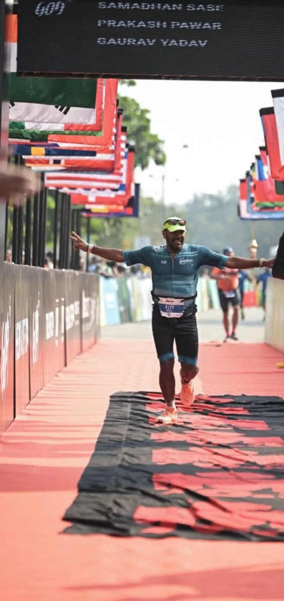

A milestone in Goa
An official finish, a demanding course and memories for a lifetime.
Explore →Gaurav Yadav · Agra, India
IRONMAN 70.3 Goa 2026 Finisher
From endurance running to triathlon, this is my record of effort, learning and the pursuit of lifelong fitness.
Jaisalmer–Laungewala · December 2025
100 kilometres completed in 15:45:51. Discover the official result, race photographs and memories from my Border Ultra journey.
Explore the 100 km journey